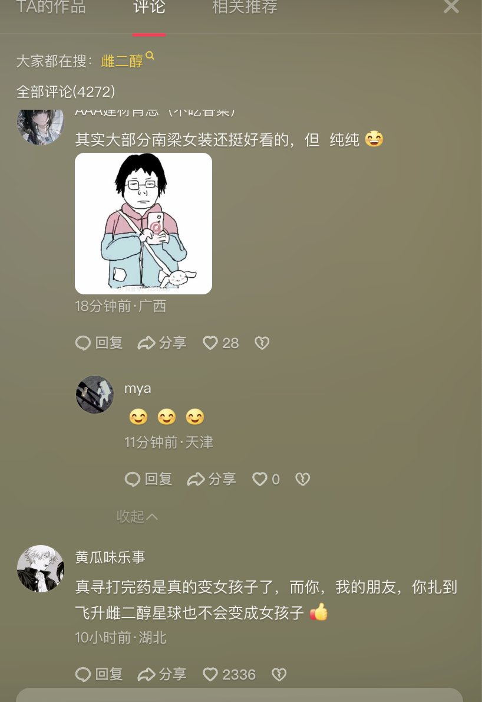
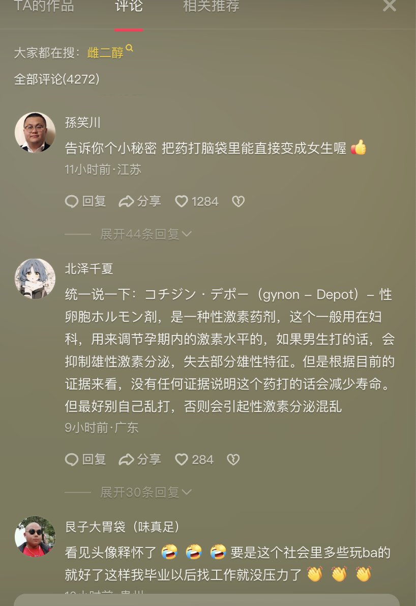

冰棍好烫喵 🍥🧊🍔🍟🍜🍣🍙🍧🍮🍩☕️💊🤤
@bghtnya
@yaoniangmao 应该去xhs看看


藥娘貓（糖商）🏳️⚧️（邮全球）
@yaoniangmao
喵喵今日新闻，在中国网络平台抖音上，一位MTF放出了自己打日雌的视频
⚠️在中国这个保守主义国家，这样的行为会引来大量的老中的攻击
⚠️在中国，获取药物在政府的高压管制下，这种行为会暴露自身的群体，并面临不可测的风险
并且会导致供货商中断供药，导致MTF面临新一轮的打压 https://t.co/z2TGv0YvBh